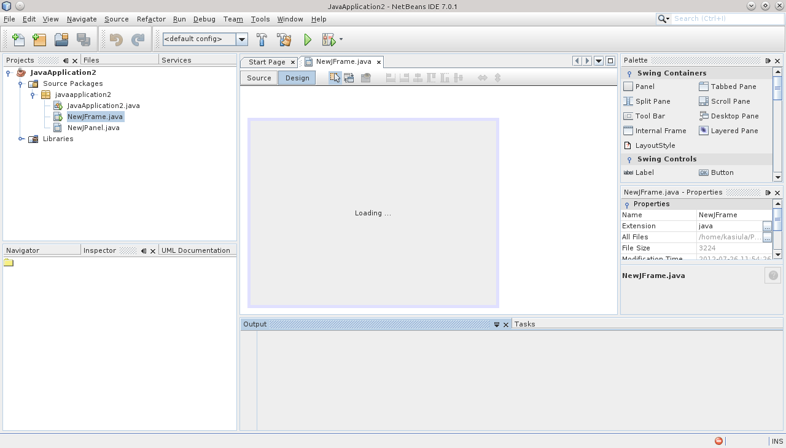

Что это: NetBeans – это бесплатная, открытая IDE, поддерживающая множество языков программирования.
Преимущества: Бесплатность и открытый исходный код: Доступен всем бесплатно и открыт для модификации. Поддержка множества языков: Поддерживает Java, PHP, C++, JavaScript и другие языки. Инструменты для различных задач: Интегрированы инструменты для сборки, тестирования и отладки.
Для чего: Разработка на различных языках, особенно Java, PHP, C++, где важна бесплатность и открытость.